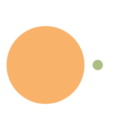
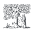
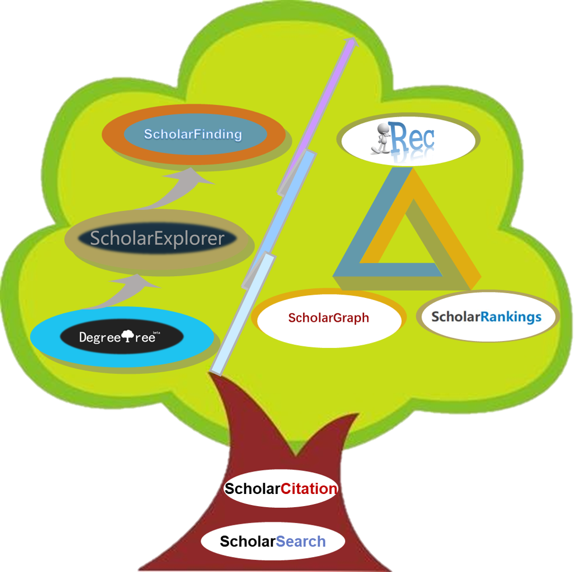
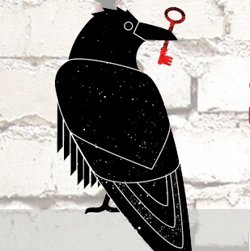

CrazyJums
Home
Archives
Tags
Link
About
List
Music
Movie
Photo
Search
Articles
22
Tags
23
Home
Archives
Tags
Link
About
List
Music
Movie
Photo
Friends' Links
friends' links
Honggen ZHU
A rookie of cv
jerryc
Author of Butterfly
QiangYang
A big cow of cv
Jiwen LU
A big cow of cv

Licheng JIAO
A big cow of cv
Haifeng WANG
A big cow of cv
Ziqing LI
A big cow of cv
Rob Robinson
ML Note
Liqin TIAN
My tutor
Zhi-Hua Zhou
A big cow of ML
arxiv.org
free for paper
dblp
for SCI paper
cnki
chinese paper

ScienceDirect
for SCI and EI paper

cdblp
dblp of chinese
EI
EI PAPER
SCI
search for SCI

sci-hub
for SCI download
conference for study
for conference attended
CCF
China Computer Federation
学术会议
for conference attended
sciencenet
for conference attended
aomanhao
A big cow of cs
My Infomation
Blog Name：CrazyJums
Blog Addr： https://crazyjums.github.io/
cnBlog Addr： https://www.cnblogs.com/jums
Blog Intro： You are the best one
if you need help,please leace a message below.
Comment
Crazy Jums
Articles
22
Tags
23
Add to bookmark
Announcement
Welcome to this site and follow ^_^
Recent Post
如何同时将hexo代码部署到GitHub以及coding上
2019-11-23
如何让自己的hexo博客被Google和百度收录
2019-11-23
用Python扫描文件夹中所有文件，并将部分文件按要求改名字
2019-11-23
查看hexo已经安装的三方包命令
2019-11-23
hexo个人博客绑定个人域名
2019-11-23
Tags
CNN
Markdown
Python
TensorFlow
hexo
movie
music
plan
基础知识
总结
数字图像处理
本地搜索
机器学习
概念解释
深度学习
玩艺
目标检测
神经网络
编程框架
编程语言
航拍识别
计算机视觉
论文笔记
Archives
2019年11月
22
Info
Article :
22
Run time :
UV :
PV :
繁
Local search
Powered by
hexo-generator-search


if you need help,please leace a message below.